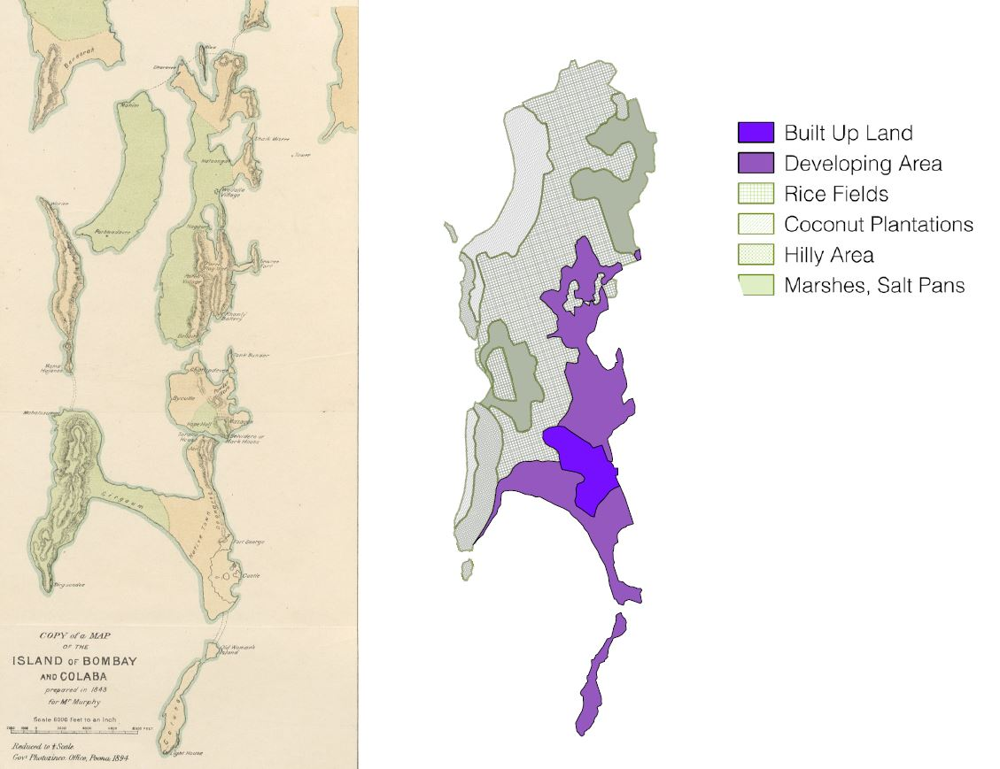

Infrared Landsat data showcases the change of vegetation across the city of Mumbai
Source: Anna Stokes
Data Source: Landsat-5, Landsat-7, and Landsat-8 data courtesy of the U.S. Geological Survey
Source: Anna Stokes
Data Source: Landsat-5, Landsat-7, and Landsat-8 data courtesy of the U.S. Geological Survey
Vegetation Degradation
From its first colonial land reclamations, to its more recent urbanization and development, Mumbai has been a city built on the basis of a battle with its natural environment. And as long as Mumbai has fought against the natural environment, the natural environment has never ceased to fight back.Here at Columbia University, a student in the Graduate School of Architecture, Planning, and Preservation, Anna Stokes, has mapped the change in vegetation around three major water ways in Mumbai from 1988 through 2001. As seen in the image above, her maps focus on the Somaiya Nalla, Mallad Creek, and the Mithi River. These maps, which are in time-lapse form, reveal how vegetation has diminished around these three “arms of the sea,” or nallahs, from 1988 to 2001. She generously shared her maps for the purpose of this paper, and they show one aspect of the battle between the rapid development of Mumbai and nature.
The diminution of vegetation around these waterways is due in part by encroachment by developers, and in part by pollution. These nallahs, which were once important serving as storm water drainage for the city, have now become sites of toxicity. They have become designated spots for the dumping of sewage and waste, contributing to their polluted states, and the subsequent environmental degradation surrounding them. And this environmental degradation is not only harming the earth, but it is leading to severe consequences for Mumbai inhabitants as well.
History of Reclamation
Bombay has been at an epic struggle with the sea, and water in general, for two and a half centuries.1
The city of Mumbai has essentially been born by the creation of land out of water. In 1535, when the site of today’s Mumbai first came under European rule when it was ceded to the Portuguese, the site consisted of “an estuarine archipelago, with a couple of large hilly islands to the north, close to the mainland, and a cluster of mainly low-lying islands to the south”. As seen in the maps below, Bombay was originally made up of seven individual islands, which overtime have been joined into a single island by infill and reclamation. Prior to the formation of a single island, as it was in an estuarial region, “the relationship between land and water was so porous that the topography of the archipelago varied with the tides and the seasons”. This meant that at times an island could be submerged, and at times it could be above water. The Portuguese built several churches and fortifications on the islands, however, for the reason of uncertainty with the variation of land and water, their main settlements were located close to the mainland, at Bassein and on Salsette”
.2

Left: "Islands of Bombay and Colaba"
Source: Gazetteer of the Bombay Presidency, Courtesy of the British Library
Right: Land Use Survey by Thomas Dickinson. Spatial Data from Theatre of Conflict, City of Hope. Mariam Dossal.
Source: Saskia Randle
Data Source: Theatre of Conflict, City of Hope by Mariam Dossal.
Source: Gazetteer of the Bombay Presidency, Courtesy of the British Library
Right: Land Use Survey by Thomas Dickinson. Spatial Data from Theatre of Conflict, City of Hope. Mariam Dossal.
Source: Saskia Randle
Data Source: Theatre of Conflict, City of Hope by Mariam Dossal.
It was only after Mumbai was passed into British hands that the southern islands became the nucleus of the “sprawling urban conglomerate” that is Mumbai. It was then, too, that a distinct line of separation between land and sea was conjured up through the application of techniques of surveying within a “milieu of colonial power”. When the East India Company acquired the four islets of Bombay, proposals were sent to London to “reclaim the ‘drowned lands’ in and around the islets”.
3
The first major work of reclamation was in 1784, and the earliest comprehensive plan of
reclamation was prepared in 1843. Links between the islands of southern Bombay, in the form of
causeways, bridges, embankments, and reclamation projects, began to rise in the eighteenth century. The
reshaping of the estuarine landscape processes were at such a place that by the 1860s a Marathi
chronicler, Govind Narayan, was able to predict that it would “never occur to anybody that Mumbai was
an island once”.4
In the mid-nineteenth century, further land reclamation projects were backed by both local and imperial incentives (Dossal 149). Today, many millionaires and billionaires live along concretized lands of “the western edge of the peninsula, which offers the finest views of the Arabian sea”.
5
Floods of 2005 and 2007
Fighting agains the city of Mumbai in its battle with the natural environment, Mumbai has undergone severe flooding in weather events. Mumbai’s earliest recorded encounter with a powerful storm was on May 15, 1618, and since then there have been many more. Because of the density of its population and the importance of its institutions and industries, Mumbai represents an “extraordinary, possibly unique, concentration of risk” (Ghosh 39). With the growth of Mumbai, its built environment has also changed so that weather that is “by no means exceptional” and often has severe effects: “monsoon downpours, for instance, often lead to flooding nowadays”.6
With exceptional events, the
results can easily be catastrophic. Two majorly catastrophic flood events occurred in 2005 and 2017. The major flood event on July 26, 2005 brought a record 37.2 inches of rain within 24 hours, with 75% of the downpour falling in a five- hour period between 2:30 pm and 7:30 pm. A strange feature of the rain was that the southern island received just 2.89 inches in the same period. Within a few hours of the rain, areas like Kurla, Kalina, Andheri, Saki Naka, Chembur, Govandi, Malad were reported flooded. At least one-third of the surface area of the city is believed to have been flooded. In some low-lying areas, the water was 10 to 15 feet deep.
7
A reason given by most government and administration officials for the breakdown of systems on July 26 was that this rainfall was unprecedented.
8
This is, however,
misleading, as pressures on, and created by, infrastructure of the under city and the over city undoubtedly
joined to create an exacerbated flood response. It is true that a downpour as extreme as that of July 26
would pose a challenge “even to a very effective drainage system,” however Mumbai’s choked creeks and
rivers were “wholly inadequate,” to the point that they ultimately contributed to health risks for the
people. The creeks quickly overflowed, causing “floods in which water was mixed with huge quantities of
sewerage as well as dangerous industrial effluents.” Roads and rail tracks disappeared under waist-high
and even chest-high flood waters. And in the northern part of the city, where the rainfall was largely
concentrated, entire neighborhoods were inundated: 2.5 million people “were under water for hours
together”.9
According to the Conservation Action Trust, without a widespread data gathering
system, it is misleading to say that the rainfall received on July 26 was “the highest in a 100 years.”
Moreover, this should definitely not be used to excuse shortcomings and incompetence on the part of the
administration.10
In 2017, Mumbai was paralyzed once again by “incessant heavy downpours” that continued for days beginning on August 29. With roads clogged, schools closed early along with some offices, and the evening rush hour saw people wading through knee- deep water on their way home, or stuck in stranded vehicles for hours. India's monsoon season runs from June to September and often causes widespread destruction.
11
Over City and Under City
The harm that has been done unto nature has been brought to light by the harm that nature has done unto the residents of Mumbai: namely, the flood of 2005 brought light to the issue of the de- vegetation of the Mithi River, and has prompted some to take action. Mumbai is highly prone to flooding, and there is no single cause of this. In fact, Mumbai’s propensity towards a water-logged state is deeply rooted in its history and colonial origins. It is a consequence of mismanagement of the urban plan of the city, which continues to cause issues for the city today. The developments of both the under city, including drainage, and the over city, including concretization, create pressures on these two realms of the city that ultimately cause an inability to handle the rainfalls and extreme weather that plague the city.Amitav Ghosh, in his book The Great Derangement, which focuses on climate change and its effects on cities, says that the “remaking of the landscape” of Mumbai has so profoundly changed the area’s topography, or the over city, that its natural drainage channels, such as Somalia Nalla, the Mithi River, and Mallad Creek, are now “little more than filth-clogged ditches.” The old waterways have been so extensively “filled in, diverted, and built over that they carrying capacity has been severely diminished; and the water bodies, swamplands, and mangroves that might have served as natural sinks have also been encroached upon to a point where they have lost much of their absorptive ability”.
12
Because of
the development of the over city, with increased concretization, and decreased naturally porous surfaces,
the natural drainage that Mumbai was graced with from the start is no longer an option. This, in turn,
places increased pressure on the under city that deals with stormwater run off.
The storm water drainage system of the city is “age old and needs urgent revamping”. The extensive impervious surface in built-up areas such as roads, pavements and building premises, as noted above, leaves little space for surface runoff to percolate into the ground. The drainage system, which collects runoff, is deemed inadequate to the runoff in the city. Not only is it structurally unable to handle the water, but the drains also often experience clogging of due to dumping of waste.
13
Over City
Run-Off due to Concretization and Pavement: The modernization of Mumbai has entailed an increase in the use of concrete, which is particularly impervious, leading to increased run-off of rain water. In the 19th century, reclamation was used as a “bold measure to tackle Bombay’s urban blight”.14
Reclamation is not the only way
that Mumbai has fought back against the waters. With increased development, more and more roads
become concretized and paved, which does not help in the absorption of water.An example of a project in Mumbai that involved extensive concretization, particularly of land bordering the water, is that of Marine Drive, which was completed by 1940. It was, the Indian Concrete Journal proclaimed, the “finest promenade in the East, built in concrete. Lining the drive were art deco apartment blocks, looking out to the Arabian sea. Behind them, on Queens Road, were also modern buildings of steel and concrete, staring across the Oval Maidan at the medievalist of the Gothic Revival buildings”.
15
These new buildings represented an architectural shift from Victorianism to
Modernity, as they boasted a smooth, unbroken, and continuous building surface to create a modern
image. And the very nature of the location of Marine Drive created an image of “ a towering mass of
buildings [seeming] to rise up from the sea”.16
as the shoreline extends southward. Not only
that, but the sound of the waves crashing against the concrete was the sound of these developments
“defying and mocking the crashing waves”.17
In modern Mumbai, patterns of construction are blanketing the city, and of particular concern are the buildings that border the ocean. The build-up of certain areas has continued without any regard to open space and the flow of water, and Ramadurai’s concern is a valid one when he questions: “There is just too much concrete, so where will the water go?” The craze for apartments by the sea is not an environmental problem that plagues the entire city equally. Rather, the rampant concretization by the sea serves put “entire localities in a very vulnerable position”.
18
Moreover, with
“rampant and indiscriminate urbanization, most areas are now either paved, concreted, or asphalted, as a
result, the runoff coefficient is now virtually 1, with very little rainwater being absorbed at all.” Thus even
at one inch per hour, the drainage system is having to cope with almost twice its intended
capacity”.19
Marine Drive is only one localized example of the concretization of the city. The Development Control Rules require 15-25% of a plot to be maintained as recreational open space in both residential and commercial zones. In practice this open space is paved/concreted, increasing run off and preventing percolation. Where basements are permitted for parking, “almost the entire plot is covered by a basement and hence percolation of water is prevented”.
20
Over the years, the builder-
politician nexus has knowingly “strangulated the city’s open spaces, wetlands, mangroves and salt-pan
lands for commercial purposes.” This loss of and subsequent commercialization and concretization of
open spaces has meant that water, which previously could seep into the soil, has practically nowhere to
go, leading to flooding. Reclamation, legal and illegal, by private parties and government departments,
have wreaked havoc on the city’s drainage.21
Development Plan of 1967
Source: Saskia Randle
Source: Saskia Randle
Diminishing Nallahs: Drainage has emerged as the most crucial issue facing Mumbai city post July 26, 2005. Though drainage is traditionally taken to mean the provision of pumping stations, storm water and sewage drains and marine outfalls, in Mumbai, the more important and almost completely neglected drainage aspect is that of natural drainage. The 437 sq. km. of Greater Mumbai is drained by several small and large rivers, from the Mithi to others such as the Poisar in Kandivli, the Dahisar river, and others. Creeks such as the Mallad Creek also play an important role in storm water drainage. It has emerged that a common thread was the manner in which the city’s natural drainage channels – its rivers, creeks and nallahs – have been abused and systematically choked if not destroyed.
22
As mentioned earlier, a nallah, or a river, or stream, which can be natural drainage for stormwater, have been diminishing in both the vegetation that surrounds them as well as their capacity to absorb water. One such example is that of the Mithi, which raised particular concern after the flood of 2005. The clean up operation of the Mithi has been inadequate so far, and it is choked with garbage and pollutants dumped by the city. Twelve years after the flood, despite plans to allow Mithi to be an outlet for receding rainwater, not much has changed.
23
Buildings coming up under the slum rehabilitation scheme (SRS) are being planned without any relevance to infrastructure, even though massive amounts of floor space index (FSI) are available on these plots. Slums invariably come up on sites which were occupied by natural drainage systems, and being “low-lying” sites, were misused for waste and refuse disposal. This has blocked the nallahs (eg. along Mithi, Dahisar, Poisar rivers and other natural creek and streams). In many cases, when these slums are handed over for redevelopment under the SRS, buildings have come up on or abutting these rivers and nallahs. For example, in Shivaji Nagar Santa Cruz (East), two buildings built under the scheme have encroached on the Mithi River. Shree Ganesh Society in Kandivli has encroached on the Poisar river.
24
The ‘reclamation’ of land by dumping either in the sea or on mangroves, mudflats and creeks invariably results in poor drainage on the landward side. This was brought to notice by local residents in Bandra and Malad.
25
Mangroves and their mudflats act as a buffer between
sea and land. During heavy rainfall, excess water from the land naturally drains into such areas. When
these locations are reclaimed, natural drainage is ignored, with foreseeable consequences for the areas that
were in the hinterland.Unauthorized Development and Slum Redevelopment: The Mumbai Metropolitan Region Development Authority (MMRDA) is also undertaking the Mumbai Urban Transport Project (MUTP) and Mumbai Urban Infrastructure Project (MUIP). The BMC has held the road repair work taken up by MMRDA under these projects responsible for flooding many areas, according to an Indian Express report. According to the Brihanmumbai Municipal Corporation (BMC), the MMRDA and its consultants failed to provide adequate storm water drainage systems on the roads where the work for these two projects was being undertaken.
26
While redeveloping slums, natural drainage must be maintained but this has not happened. In many cases this will mean that buildings cannot be built in areas presently occupied by slums. The current scheme however “conveniently ignores these ecological imperatives”.
27
Roads, Water, and Green Space in Mumbai and Maharashtra
Source: Saskia Randle
Data Source:
Source: Saskia Randle
Data Source:
Under City
Obstructions within the Drains: The drainage system that Mumbai does have is not efficient to to physical obstructions caused by pollution. Just as the nallahs are undergoing an effort to be cleaned up, desilting the water drains (removing the clogged layers of sand and grainy soil) all over the city has been slow going process. There are many obstructions and blockages in the drains due to other services passing through the drains, such as water and sewage pipes. These pipelines cause blockage and siltation. The (BrihanMumbai Storm Water Drain Project) BRIMSTOWAD report found that 23% of all drain defects were associated with such obstructions. The Conservation Action Trust has received testimony from officials in the BMC and Railways which makes it clear that “plastic does play a major role in choking drainage and causing floods during high rainfall periods”.28
Poor Structural Conditions of Drains: Not only are many of the pipes clogged, but to begin with, they are in poor structural condition due to their age and initial haphazard construction. The main point here is that the storm water drainage system is 70 years old and is designed to not take more than 25 mm of rain during high tide. Mumbai’s drainage system was designed in the early 20th century for a maximum rainfall of 25 mm per hour, with a 0.5 runoff coefficient — that is, assuming that half the rain would be absorbed and only half would flow into the drainage system. Moreover, according to the BRIMSTOWAD report, the capacity of many drains is even less than 25 mm/hr particularly when downstream levels are considered.
29
Unplanned Development in Relation to Drainage: The entire Brihanmumbai territory is divided in seven sewer zones—Colaba, Worli, Bandra, Versova, Malad, Bhandup and Ghatkopar—for the sake of collection, treatment, and disposal of the sewage. The treated sewage from Colaba, Worli andBandra Zones is disposed into the Arabian Sea through marine out falls. The treated sewage from Versova zones is discharged into the Malad creek, while the treated sewage from Bhandup and Ghatkopar zones discharge into the Thane creek, through waste water treatment facilities such as aerated lagoons. The total length of sewer lines is 1860 km. The sewage collected through the sewerage network is conveyed to the Main Pumping Station and treatment facilities through a complicated network of sewers and satellite pumping stations, for treatment and disposal.
30
Conclusion
Moving forward, it will be important to think about the way these pressures might be contributing to socio-spatial inequities in Mumbai in relation to flooding. Do the wealthy choose to live in higher altitude land, leaving the poorer classes to settle for lowlands that are more prone to flooding? Do the wealthy have more means to implement concretization of their roads and buildings, thus allowing the water that follows on them to run off into the lower lying areas (that may or may not be concretized)?Please note: footnotes not visible on mobile.
Return to Student Projects